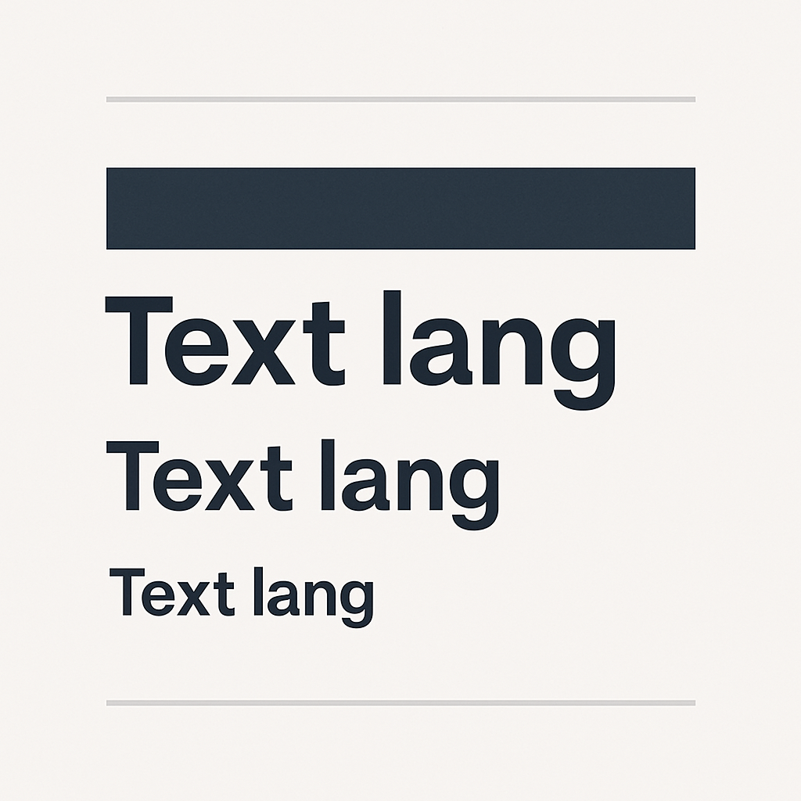
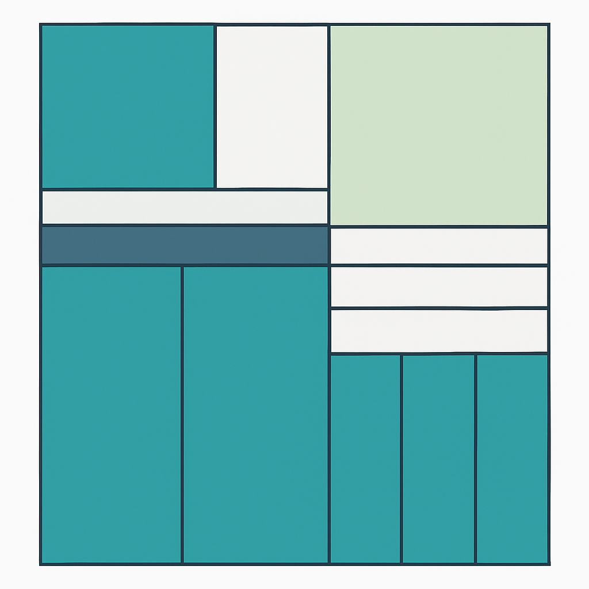

Visceral Design
This section explores how visual choices affect user emotion and perception. It includes layout, color, imagery, and design elements that shape the user's first impressions.
Wireframe Page Layouts
These wireframes represent three key pages for both mobile and desktop:


Color Emotion
We use bold blues and soft neutrals to evoke trust and calm.

Typography Rhythm
Consistent spacing and font weights create a feeling of balance.

Layout Consistency
Grid-based layouts and visual alignment guide user expectations.